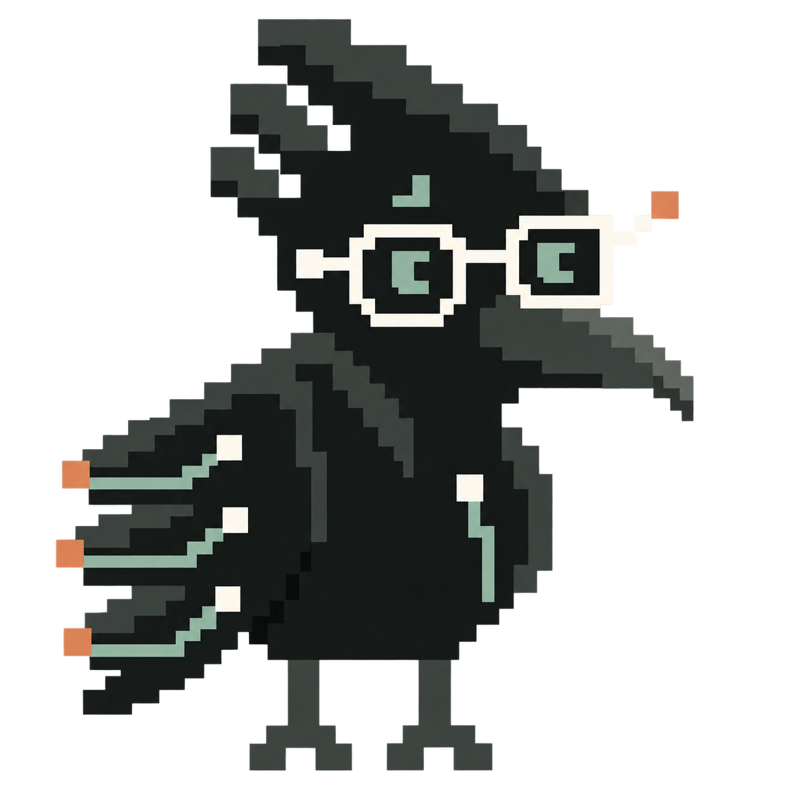
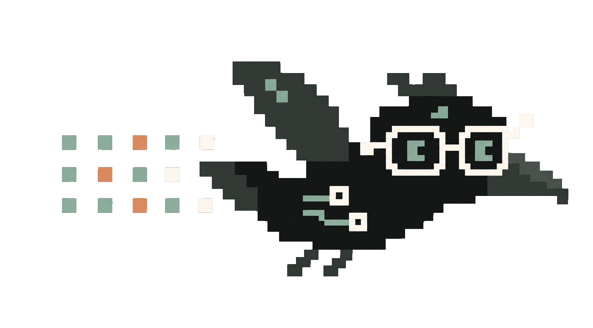
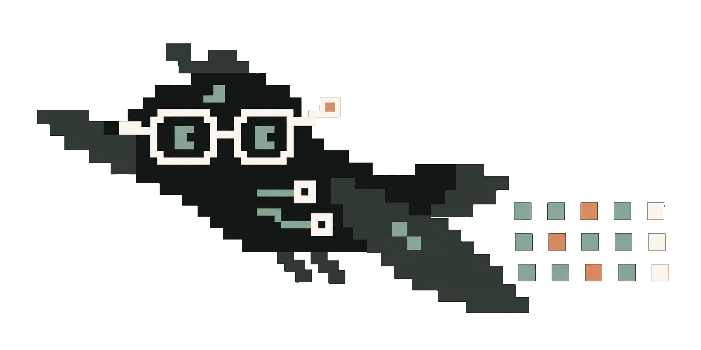
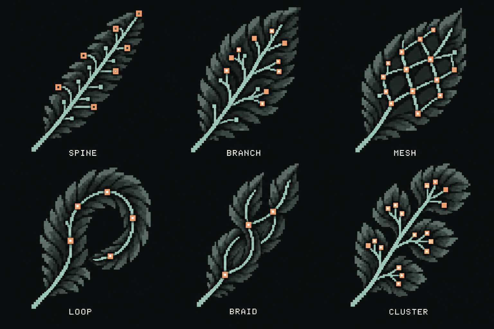
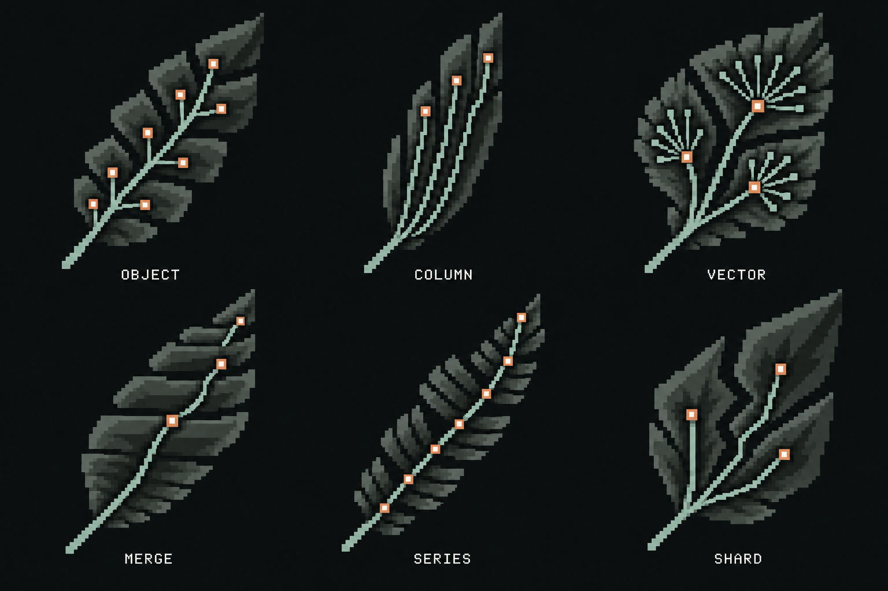

crowbo
Brand system · 29 September 2026 · local design reference

Four colours, four jobs.
Chalk is for the thing you should read. Sage carries context and infrastructure. Oxide marks the one action or the thing that changed. Near-black anchors everything. Charcoal is a shade plane, never a fifth accent.
- Name
- Chalk
- Token
#F5F3E8- Job
- The recommendation surface, wordmark, glasses
- Name
- Sage
- Token
#91AA9D- Job
- Source context, paths, eyes, labels
- Name
- Warm oxide
- Token
#D18A66- Job
- Selection, correction, the next action, focus ring
- Name
- Near-black
- Token
#171B1Aon#0C1010- Job
- Body, surfaces, the dark base
Four faces, each with one permission.
The company page previously read in a system serif while the studio read in Space Grotesk. From this pass both use the same reading face, so the path from landing to demo is one voice.
Give support a role that fits the work.
Security teams have no shortage of information. The challenge is knowing what deserves their time and resources.
DECISION 001 · VERSION 1
> Reduce unnecessary access without breaking the work.
v1 · initial view ⌘ K
One eyebrow per block.
Uppercase monospace labels are a signature when they appear once per block and texture when they appear on every line. Inside a block, field labels are sentence case in the heading face.
Test a role that fits the work.
Why this optionKeep tickets and own-queue exports.
What must holdOwner review and a permissions test.
Next actionReview and test the proposed role.
Test a role that fits the work.
Why this optionKeep tickets and own-queue exports.
What must holdOwner review and a permissions test.
Next actionReview and test the proposed role.
Glyphs on the mascot's grid.
Thirty-one icons drawn on a 16-unit grid from filled rectangles, so they share the stepped edges of Modular Crow, Packet Runner and the feathers. They replace the Lucide stroke set. Chalk on dark by default; oxide for the action, sage for context.
Source of truth: decision-studio/src/pixel-icons.tsx.
This sheet draws from a copy of the same rectangle lists.
Modular Crow and Packet Runner.
Modular Crow anchors a page or a source network. Packet Runner flies in the upper right of page headings, facing inward, in three poses. Both keep the compact body, stepped crest, chalk circuit glasses, sage eyes and sparse oxide terminals.



Further poses (perched-reading, pointing, a 24px head) are briefed in the README beside this page and have not been generated. They remain candidates until selected.
Twelve feathers, six source families.
Each feather stands for a kind of evidence. Braid for reviews, Cluster for meetings, Branch for permissions, Merge for changes, Spine for policies, Vector for experience, Column for capacity, Series for incident feeds, Object for records, Loop for control checks, Shard for risk assessments and Mesh for dependencies. Their circuits illustrate relationships, not measured weights.


One border per layer.
The chalk card is the only light surface on a screen, so the eye lands on the answer first. Inside a card, buttons are solid or text, never another bordered box. A notice is a paragraph with a left rule.
Support operator
Keep ticket handling and scoped reports. Remove the administration the team does not need for its confirmed work.
What must holdCustom support role
Keep tickets and own-queue reports. Remove settings and user administration.
Requires role support, owner review and a controlled permissions test.
Short, pausable, labelled.
- Page transitions under 250ms; feather scans and travelling packets are finite, with a visible pause control.
- The system reduced-motion preference is respected everywhere and disables the toggle.
- Every synthetic surface carries a quiet label. These are typographic, never dialogs.